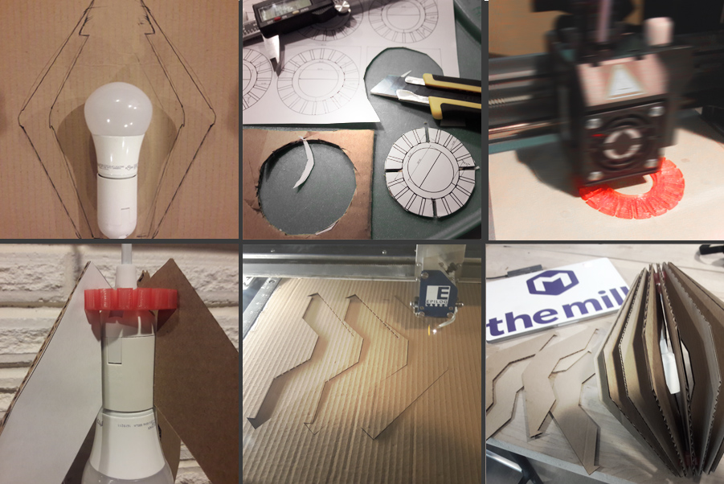

Did extensive hand made protoypes to validate structural integrity
With protoype validated, created a new file in Rhino
Using calipers, measured width of cardboard = 3mm
Using Grasshopper, set the width of the parametric "slot connector" rectangles 3mm, subtracted rectangles from desired shape
Used region difference to create the "slot pieces" I needed
Exported .stl file from Rhino
Exported a file with 7mm "slot connector" widths to Illustrator
Set the line widths to both files to .001-in. in Illustrator
Write up of process: 2D cardboard "fin" pieces
Brainstormed design ideas with pencil and paper
Did extensive hand made protoypes to validate structural integrity
With protoype validated, created matching file in Adobe Illustrator
Use Laser Cutter at The Mill to create Cardboard "fin" pieces
Test fit into 3D connector = success!
Completed press fit custruction
For aesthetic purposes, spray painted the pieces flat black

Problems in file creation and how I resolved them
Opted to help a friend set up a brand new 3D printer and to "test" it with my school project
I drew a triangle, elipse, octagon, and a square/circle combo in Grasshopper and baked them, then aligned it to the Grasshopper parametric circle/rectangle feature
Next step was to Bake the Grasshopper parametric design with Region Difference
Finally I subtracted the adjusted baked polar array from the shapes I drew
Raised the z axis table height until light contact was with the cardboard
Removed the key
Hit File, Print, selected the laser cutter
Set the print dialog box to the matching "piece size"
Set laser cutting settings to the following:
Speed = 25
Power = 100
Frequency = 100
Hit OK to send the file
Success! The patterns cut as I hoped for
Drama
Logistical challenges: I don't live at the UW. 45 minute drive. Leaving and returning continuously to check on a 3D print not feasable. Staying 12+ hours on campusnot feasable.
Solution. Find home 3D printer. Ping social network. Success!
Thought: Considering the time savings, at $239, might be worth buying and having your very own cool 3D printer for future projects (and passing this class)
1st time set up of Da Vinchi Printer = easy
Download of print drivers and help documentatin from company website = nightmare
Followed measure twice, cut (print) once scenario using many hand made prototypes = success!
Fit challenges: Granular level of tolerances. Ring must be big enough for plug and switch to pass through, yet small enought to rest on housing
Kit design and execution
I challenged myself to cut a variety of shapes
My initial cut of the 7mm did not go all the way through
I learned that with 7mm I had to send the same file again for the final cut
I did not chamfer the triangle pieces for aesthetic reasons
Difficulty in press-fitting the non-chamfered was minimal and I was able to keep the pointy aesthetic I desired
The 3mm material is easier to work with than the 7mm, but not robust
Of the two widths, I prefer the 7mm as it has a mechanical aesthetic I enjoy
Stability test
3mm material construction shake test
7mm material construction shake test
Peer-attribution
Special thanks to @Irina Smoke, who helped me "talk out" how to set the exact size of a rectangle in Rhino during class
Special thanks to @Angel Vuonga, who helped me better understand Grasshopper and rotation in Rhino during class
Special thanks to @Dave Kennedy, for asking Nadya to make a video for the Grasshopper tutorial, without which I would have been totally lost